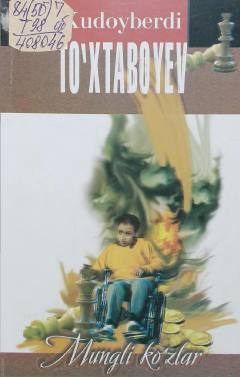

MKOta-ona mehr-oqibati va farzandlar taqdiri haqidagi ta’sirchan asar.
Mazkur asar mol-dunyoni har narsadan ustun bilgan va oxir-oqibatda guldek farzandlarining achchiq qismatiga sabab bo‘lgan ota-ona haqida hikoya qiladi. Xudoyberdi To‘xtaboyevning ushbu ertak-romani o‘zining ta’sirchanligi va badiiy qimmati bilan kitobxonlar mehrini qozongan. Asar oilaviy munosabatlar va insoniy burch mavzularini o‘rtaga tashlaydi.